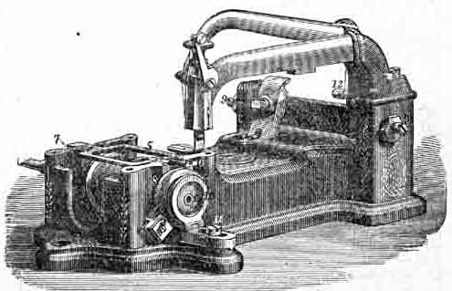

FOR USING
Use the best Sperm Oil, to be had of our Agents, and at our offices.
The machine should be Oiled once a day, when in use.
Remove the Needle and the Cloth Plate.
Turn machine till narrow part of Cam is on top, and remove the Feed Motion and clean it.
Clean well about the Rotating Hook.
Then put a drop of oil --
1st, in the oil holes at each end of the Rotating Hook Shaft.
2. On the right side, and small part of the Cam.
3. In the oil hole in the connection to the left of the Cam.
4. On top of the Cloth-Presser piston where it passes through the fixed arm.
5. On the Steel Tongue under the feed point, and on the side of the bar between this and the feed point.
6. In teh poil holes at each end of the back part of the Needle Arm, over the points of the side screws.
7. In the Slot at the rear end of the connection.
8. In the oil holes of the Treadle, each end of the Wooden Pitman, and in the oil holes over both ends of the Balance Wheel Shaft.

| 1. Bobbin | 5. Feed Bar | 8. Rotating Hook |
| 2. Brush Pad | 6. Feed Point | 9. Side Screws |
| 3. Cam | 7. Feed Spring | 10. Bobbin Holder |
| 4. Connection | 11. Bobbin Holder Screw |
To Hem. Take out the Glass-foot (with the needle wrench) and substitute the hemmer. Fold the hem for about half an inch, and insert it in the hemmer far enough for the needle to catch the hem. The edge of the cloth should pass completely around the scroll as in the above cut. If the hemmer does not turn the edge of the goods completely under, but leaves a raw edge, turn the edge in the left hand a little towrds you. If too much is turned in, turn it from you. To hem bias worsted goods, hold them stretched.
If the needle is bent, so that it does not catch the edge of the hem, spirng it from you. If it strikes too far from the edge and into the center of the hem, spring it to you.
To make a wide hem, fold the cloth (once only) the width of the required hem. Pass the edge into the hemmer, as in making a narrow hem, the extra width extending back from the hemmer.
To fell, sew up the two edges, the lower extending about an eighth of an inch beyond the upper. A good rule is to have the hemmer in the cloth-presser, and have the edge of the lower piece of cloth pass exactly under the farther edge of the hemmer, and the edge of the upper piece pass under the opening in the hemmer.
Nearly the whole secret of felling is in sewing this seam.
Then open the goods well, and fell down the projecting edges with the hemmer, as in the cut below.
The Large Gauge is used for wide tucking, quilting, and plaiting shirt bosoms. It is fastened by the Thumbscrew to the under side of the Stationary Arm, as in the cut, and can be moved forward or backward, according to the width of tuck or plait required.
To adjust the Gauge for quilting loosen the screw which connects the parts, and raise the lower part to allow the goods to pass between it and the Cloth-plate; then tighten the screw.
The last seam sewed should pass directly under the gauge, and the next seam will be parallel with it.
The Plate Gauge, for sewing close to an edge, or for tucking, is screwed to the Cloth-plate, using the Thumbscrew. For sewing a very narrow seam or tuck, use the glass with the under side cut away.
The Braider is of glass, with two holes in it, one for the braid, the other for the needle, and fits in the cloth presser. To braid, pass the braid through the left hole of the braider, and draw the end out under the cloth presser to the right, being careful to have it pass under the needle.
After the first stitch is taken the braid will be drawn through with the goods by the feed point.
The Glass Corder is a glass foot with grooves on the under side. Insert the cord between the folds of the goods, and crease it close to the edge with the needle-wrench or scissors. Place the goods under the Cloth presser, with the cord in teh groove nearest the operator, and stitch as usual.
If the cord is held straight it is more easily placed close to the edge.